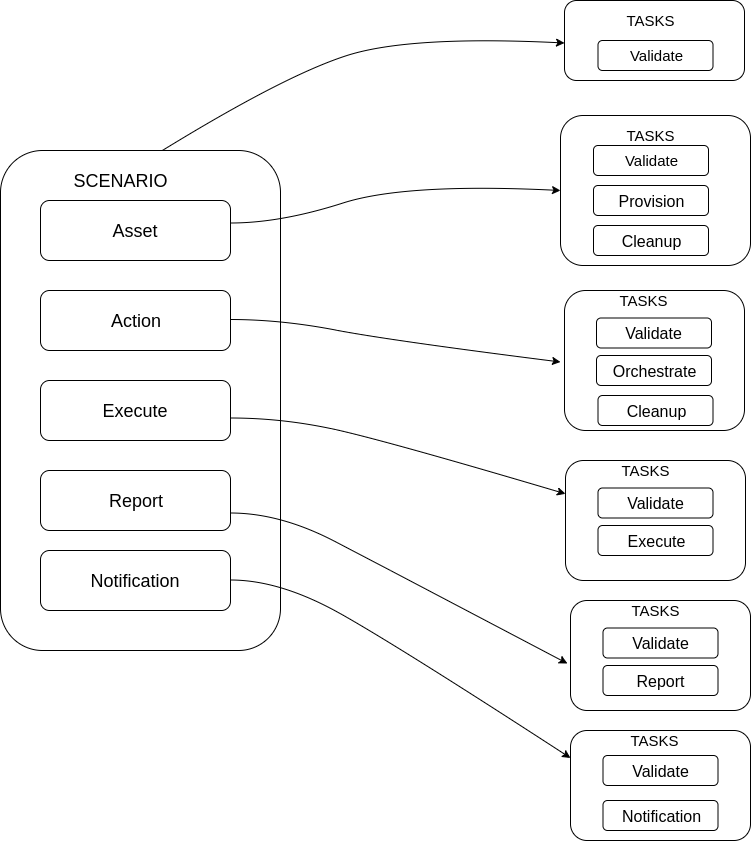

Architecture¶
This page is intended to explain the architecture behind teflo. We strongly recommend that you review the scenario descriptor since it will be helpful when following this document.
Basics¶
Lets first start with the basics. Teflo is driven by an input file (scenario descriptor). This input file defines the E2E scenario to be processed. Within the file, there are multiple task definitions defined. Each task definition contains resources. These resources will be executed against that given task.
Each teflo execution creates a teflo object for the E2E scenario. The teflo object further creates resource objects for each of the resources provided in the scenario descriptor file. These resources have tasks associated to them to be executed.
Teflo Object¶
As we just learned from the basics section, the teflo object contains resources. The core resource which makes up the teflo object is a scenario resource. A scenario resource consists of multiple objects of ‘resources’ which derive tasks for the scenario to be processed. Each resource has a list of associated tasks to it. When teflo executes these tasks the resources associated to that task are used.
Lets see a diagram with the available resources for a teflo object. The teflo object is made up of scenario resource and the scenario resource comprises of other resources(asset, action, execute, report, notification).

The diagram above shows the resources that make up a scenario resource. The table below describes each resource in more detail.
| Resource | Description |
|---|---|
| Scenario | The core resource which makes up the teflo compound. The scenario resource holds the other resources(asset, action, execute and report) |
| Asset | The asset resources define the system resources for the scenario. These can be anything from hosts, virtual networks, storage, security keys, etc. |
| Action | The action resources define the actions to be performed against the defined hosts for the scenario. These actions consist of: system configuration, product installation, product configuration, framework installation and framework configuration. In summary this resource provides the scenario with the ability to perform any remote actions against the hosts defined. |
| Execute | The execute resources define the tests to be executed against the defined host resources. |
| Report | The report resources defines which reporting and analysis system to import test artifacts generated during the execution phase. |
| Notification | The notification resources defines which tool to send the notification to based on the triggers |
Now that we have knowledge about how a teflo object is constructed. Which includes a number of resources. Lets dive deeper into the resources. What do we mean by this? Every resource has a number of tasks that it can correspond to.
The diagram above shows the teflo object with resources defined. Each of those resources then have a list of tasks associated to it. This means that when teflo runs a scenario, for each task to be processed it will run the given resources associated to that given task.
e.g. The scenario resource has validate task. This means that when teflo runs the validate task it will process the scenario resource.
e.g. The asset resource has a validate, provision and clean up task. This means that when teflo runs the validate task it will process that asset resource. When it goes to the provision task, it will process that asset resource and the same for clean up task.
e.g. The action resource has a validate and orchestrate task. This means that when teflo runs the validate task it will process that action resource. When it goes to the orchestrate task, it will process that action resource.
This same logic goes for the execute and report resources.
Teflo Pipeline¶
In the previous section about teflo object we learned about how a teflo object is constructed with resources and tasks. Every resource could have different tasks. Those tasks are executed in a certain order which the user can provide.
Lets see a diagram showing the default tasks that will get executed when running teflo.

The above diagram shows the ordered list from top to bottom of the tasks teflo will execute.
If no resources are associated to a given task, teflo would skip executing the task. This provides the user with the ability to control the flow of their scenario.
Plug And Play¶
Teflo was developed with the OO programming model which allows it to be easily extended. This means teflo is very flexible at being able to interface with various applications. Teflo supports a plugin model where it can interface with different plugins created for teflo. Teflo has interfaces for provisioners, orchestartors, executors, importers and notifiers. These interfaces allow differnt plugins to work with teflo.
The best way to explain this is to go through a couple examples. First we will look at how this relates to asset resources and the provision task.
Every asset resource defined within a teflo object has an associated provisioner to it. This allows the user to select different tools to handle the provision task request. Teflo provides an asset_provisioner interface which can talk to differnt provisioners, e.g. bkr_client_plugin, os_libcloud_plugin, etc.
teflo/provisioners
├── asset_provisioner.py
├── ext
│ ├── bkr_client_plugin
│ │ ├── beaker_client_plugin.py
│ │ ├── __init__.py
│ │ └── schema.yml
│ ├── __init__.py
│ └── os_libcloud_plugin
│ ├── __init__.py
│ ├── openstack_libcloud_plugin.py
│ └── schema.yml
├── __init__.py
---
name: demo
description: demo
provision:
- name: ccit_ci_test_client_a
groups: client, test_driver
provisioner: openstack_libcloud
credential: openstack
key_pair: ccit_key
image: rhel-7.4-secommonrver-x86_64-released
flavor: m1.small
network:
- private_network
- provider_net_cci_8
ansible_params:
ansible_user: cloud-user
ansible_ssh_private_key_file: keys/ccit_key
The above code snippets demonstrate how from the asset resource definition defined within the scenario descriptor file. It tells teflo that it would like it to use the openstack_libcloud provisioner. With this flexibility users could provide their own module to provision and define this as the provisioner for their given asset resource.
Teflo uses bkr_client_plugin(using beaker client) and os_libcloud_plugin (using openstack libcloud) as its native provisioner plugins. The implementation for users to plug in their own provisioner can be possible by creating a separate provisoner plugin. We currently have external provisioner plugins for linchpin and openstack-client
Here is an example based on a custom provisioner module:
teflo/provisioners
├── beaker.py
├── ext
│ └── __init__.py
├── __init__.py
├── openshift.py
├── openstack.py
└── provisioner_xyz.py
---
name: demo
description: demo
provision:
- name: machine1
provisioner: provisioner_xyz # provisioner name
provider:
name: openstack
credential: openstack-creds
image: image1
flavor: flavor
networks:
- network
floating_ip_pool: 0.0.0.0
keypair: keypair
role: role
Note
Please visit the CONTRIBUTE.rst to understand more about how to create a customized plugin for Teflo
Plugin model also applies to the other resources within the teflo object. Lets look at the action resource. Teflo provides a orchestrator interface called action_orchestrator which will interface with different orchestrator plugins. This resources main purpose is to perform configuration actions. To do configuration there are a lot of tools that currently exists to perform these actions. By default teflo supports the ansible orchestrator plugin out of the box. It can easily be plugged in to use a different orchestrator.
Here is an example with an action resource using the default ansible orchestrator by teflo.
teflo/orchestrators/
├── _ansible.py
├── _chef.py
├── ext
│ └── __init__.py
├── __init__.py
└── _puppet.py
---
name: demo
description: demo
provision:
- name: ccit_ci_test_client_a
groups: client, test_driver
provisioner: openstack_libcloud
credential: openstack
key_pair: ccit_key
image: rhel-7.4-secommonrver-x86_64-released
flavor: m1.small
network:
- private_network
- provider_net_cci_8
ansible_params:
ansible_user: cloud-user
ansible_ssh_private_key_file: keys/ccit_key
orchestrate:
- name: rhn_subscribe
orchestrator: ansible # orchestrator name
hosts:
- machine1
vars:
rhn_hostname: <hostname>
rhn_user: <user>
rhn_password: <password>
It can easily be extended to work with other various orchestrators.
Conclusion¶
Hopefully after reading this document you were able to have a better understanding on how teflo was designed. To gain an even deeper understanding on how it works. We highly recommend following the development document to step through the code.